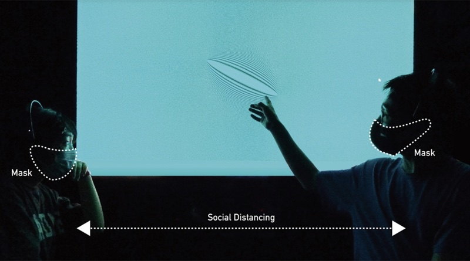

← Back to Publications
C02 — Conference Paper
Visualizing the Electroencephalography Signal Discrepancy When Maintaining Social Distancing: EEG-Based Interactive Moiré Patterns
HCI International 2022 (LNCS 13322), pp. 185–197, 2022

Abstract
Abstract not openly indexed by the publisher — please follow the Springer link for the full text.